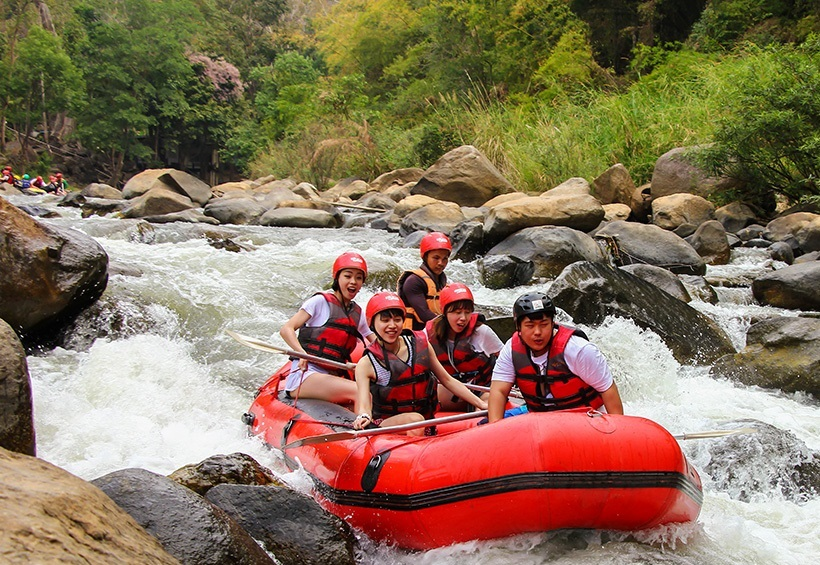
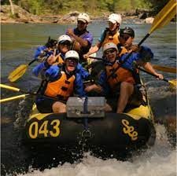

White Nile Rafting

Aesthetic
White Nile Rafting Ltd is a premier adventure company based in Jinja, Uganda, offering exhilarating
white water rafting experiences on the mighty River Nile. With over 15 years of expertise, they
specialize in Grade 5 rafting trips—both full-day and half-day options—designed to thrill adrenaline
seekers with powerful rapids and breathtaking scenery. The company is also notable for being led by
Prossy Mirembe, the world’s first Black female kayaker, whose pioneering spirit adds a unique edge
to the experience. Whether you're a first-timer or a seasoned rafter, White Nile Rafting Ltd
promises unforgettable aquatic adventures with professional guides, safety-first practices, and a
splash of Ugandan hospitality.
History
White Nile Rafting, located near Jinja at the source of the Nile in Uganda, has grown into one of
Africa’s premier white water destinations. The rafting scene here began in 1996, when pioneering
adventurers made the first descent of the river’s powerful rapids, introducing the sport to the region2.
With the Nile’s immense volume—up to seven times that of the Zambezi—it quickly gained fame for its
Grade 4 and 5 rapids,

attracting thrill-seekers from around the world. Over time, iconic rapids like Bujagali Falls and Itanda
Falls became central to the experience, offering
both technical challenges and breathtaking beauty. Today, White Nile Rafting is not just a sport—it’s a
symbol of Uganda’s adventure tourism, blending adrenaline with the rich natural and cultural heritage of
the Nile basin.